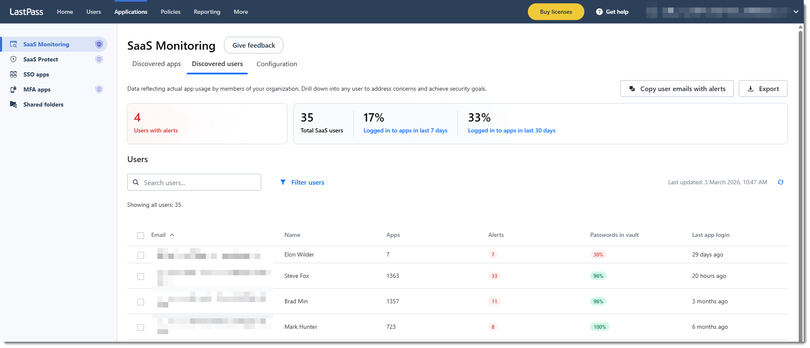

SaaS Monitoring
Find every app, approved or not
See the apps your company’s users reach and who uses them, so nothing runs out of sight.
- A Discovered apps tab you can filter
- A Discovered users tab for activity by person
- Monitored domains you choose